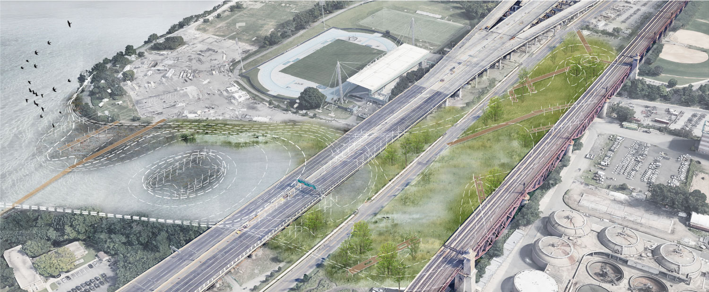
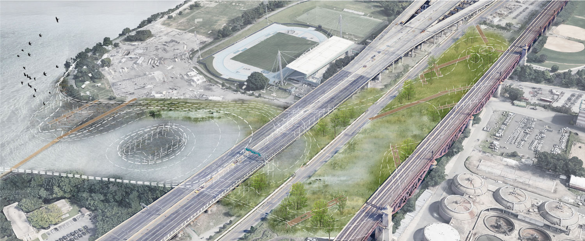

RANDALL'S ISLAND, NY
Spring 2020
Climate-adaptive Design Studio
This project envisions Randall's Island, an island that provides space for various recreational activities for New York City, as the future wetland lab for the city. As sea level rises, the existing Little Hell Gate marsh will be submerged by 2100. To provide space for marsh migration and situate urban ecological research into public space, a system of wetland is created at two stages. A prototype that adapts to various types of habitats is installed. Researchers and public are encouraged to engage with a great diversity of habitats as sea level changes.
To help envision the future of the wetland lab, I created a park website for the future visitors. PLEASE CLICK HERE FOR THE WEBSITE.
For sub pages, click here: HISTORY | VISIT RANDALL'S ISLAND | PARK-AS-LAB | OYSTER


 
